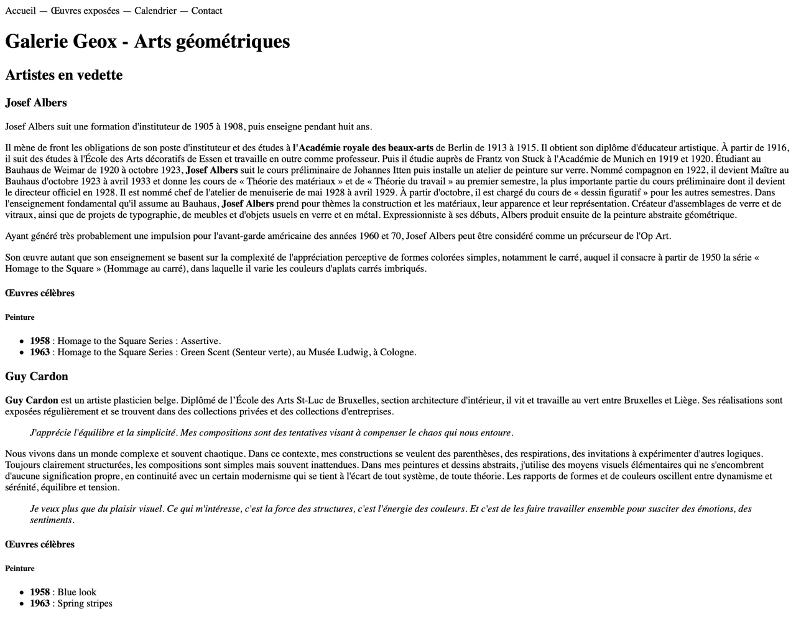

Last modified: Thu Feb 07 2019 00:19:07 GMT+0100 (Central European Standard Time)
1. À faire
- ajouter une page index.html
- la navigation ne doit pas encore comporter de lien (on le verra dans 2 cours)
2. Rendu

3. Texte
Accueil — Œuvres exposées — Calendrier — Contact Galerie Geox - Arts géométriques Artistes en vedette Josef Albers Josef Albers suit une formation d'instituteur de 1905 à 1908, puis enseigne pendant huit ans.
Il mène de front les obligations de son poste d'instituteur et des études à l'Académie royale des beaux-arts de Berlin de 1913 à 1915. Il obtient son diplôme d'éducateur artistique. À partir de 1916, il suit des études à l'École des Arts décoratifs de Essen et travaille en outre comme professeur. Puis il étudie auprès de Frantz von Stuck à l'Académie de Munich en 1919 et 1920. Étudiant au Bauhaus de Weimar de 1920 à octobre 1923, Josef Albers suit le cours préliminaire de Johannes Itten puis installe un atelier de peinture sur verre. Nommé compagnon en 1922, il devient Maître au Bauhaus d'octobre 1923 à avril 1933 et donne les cours de « Théorie des matériaux » et de « Théorie du travail » au premier semestre, la plus importante partie du cours préliminaire dont il devient le directeur officiel en 1928. Il est nommé chef de l'atelier de menuiserie de mai 1928 à avril 1929. À partir d'octobre, il est chargé du cours de « dessin figuratif » pour les autres semestres. Dans l'enseignement fondamental qu'il assume au Bauhaus, Josef Albers prend pour thèmes la construction et les matériaux, leur apparence et leur représentation. Créateur d'assemblages de verre et de vitraux, ainsi que de projets de typographie, de meubles et d'objets usuels en verre et en métal. Expressionniste à ses débuts, Albers produit ensuite de la peinture abstraite géométrique.
Ayant généré très probablement une impulsion pour l'avant-garde américaine des années 1960 et 70, Josef Albers peut être considéré comme un précurseur de l'Op Art.
Son œuvre autant que son enseignement se basent sur la complexité de l'appréciation perceptive de formes colorées simples, notamment le carré, auquel il consacre à partir de 1950 la série « Homage to the Square » (Hommage au carré), dans laquelle il varie les couleurs d'aplats carrés imbriqués.
Œuvres célèbres Peinture 1958 : Homage to the Square Series : Assertive. 1963 : Homage to the Square Series : Green Scent (Senteur verte), au Musée Ludwig, à Cologne. Guy Cardon Guy Cardon est un artiste plasticien belge. Diplômé de l’École des Arts St-Luc de Bruxelles, section architecture d'intérieur, il vit et travaille au vert entre Bruxelles et Liège. Ses réalisations sont exposées régulièrement et se trouvent dans des collections privées et des collections d'entreprises.
J'apprécie l'équilibre et la simplicité. Mes compositions sont des tentatives visant à compenser le chaos qui nous entoure. Nous vivons dans un monde complexe et souvent chaotique. Dans ce contexte, mes constructions se veulent des parenthèses, des respirations, des invitations à expérimenter d'autres logiques. Toujours clairement structurées, les compositions sont simples mais souvent inattendues. Dans mes peintures et dessins abstraits, j'utilise des moyens visuels élémentaires qui ne s'encombrent d'aucune signification propre, en continuité avec un certain modernisme qui se tient à l'écart de tout système, de toute théorie. Les rapports de formes et de couleurs oscillent entre dynamisme et sérénité, équilibre et tension.
Je veux plus que du plaisir visuel. Ce qui m'intéresse, c'est la force des structures, c'est l'énergie des couleurs. Et c'est de les faire travailler ensemble pour susciter des émotions, des sentiments. Œuvres célèbres Peinture 1958 : Blue look 1963 : Spring stripes